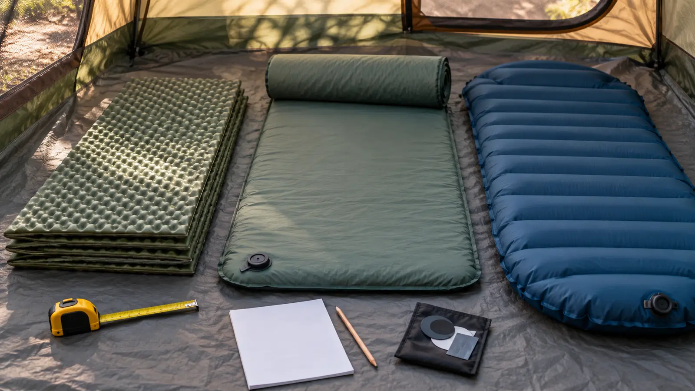

Closed-cell foam
No valve, pump or puncture-dependent chamber. It is bulky and usually less cushioned, but failure is obvious and setup is fast. Fit it inside the tent and vehicle before calling the bulk harmless.
FAMILY CAMPING · BUYING GUIDE · DATA-LED
The warm sleeping bag gets the attention. The ground gets your heat. Measure the tent, compare tested insulation and make every sleeper prove the setup at home.

A sleeping pad has two jobs: cushion the body and resist heat moving into the ground. The second job is why thickness, plush-looking chambers and a sleeping bag label cannot settle the decision. NEMO's explanation of the ASTM F3340 pad test defines R-value as resistance to heat flow. Therm-a-Rest says the ASTM F3340-18 standard lets shoppers compare published pad R-values on a like-for-like laboratory basis.
That number is not a universal temperature guarantee. A sleeper's clothing, bag, age, circulation, campsite surface, humidity, wind, shelter and pad arrangement all matter. Do not turn an R-value into a made-up “safe to 20°F” promise. Start with the expected ground and overnight conditions, then follow the pad and sleeping-bag makers' current system guidance. When conditions are outside the family's experience, change the trip or consult an experienced outfitter rather than betting bedtime on an internet chart.
A pad that fits the catalog dimensions may still create a bad family room. Tapered mummy shapes can leave useful gaps or push sleepers onto edges. Rectangular pads can block the zipper. Coupled doubles can reduce cracks but make firmness and nighttime movement a shared negotiation. Put the actual or taped pad footprints inside the actual tent, close the doors and load the normal sleeping bags.
Then assign positions. Keep the adult who handles a nighttime exit where that adult can move. Keep young children away from loose cords, pumps and repair chemicals. Do not place essential medication where a deflated pad could cover it. The site's complete family sleep-system guide handles bags, clothing, ventilation and bedtime together; the kids' sleeping-bag guide explains why bag ratings also need disciplined reading.
For a foam reference, Therm-a-Rest's Z Lite Original page shows the kind of dimensions and R-value a manufacturer should publish. Its Trail Scout page is a self-inflating example with a manufacturer-stated 1-inch thickness and R-value 3.1. NEMO's Astro non-insulated page demonstrates why a substantial-looking air pad can still publish a low insulation value; its page currently states R 1.5.
Those examples explain fields, not winners. Specifications can change by size, model year and market. Confirm the exact current item before buying. Sea to Summit's R-value guidance is another manufacturer explanation of standardized testing. Its care instructions are product-specific; do not transplant a valve or adhesive procedure to another brand.
Do not buy four pads from an unproven guess. If possible, borrow or buy one returnable candidate, test it on a clean floor and inspect the pressure the next morning. That is a household fit check, not a cold-weather certification or durability test.
Low energy? Measure the tent and lay out paper rectangles only. Bad weather is fine for the home proof; do not deliberately wet a new pad. The one-night camping plan shows where the sleep setup belongs before dark.
Skip until you know the tent floor and expected conditions. Skip an air-dependent design if no adult will carry the correct repair option or the group cannot tolerate a possible floor-level night. Skip a bulky foam setup when it cannot be transported and secured. A person with pain, mobility, circulation or medical temperature concerns may need professional advice and a different sleep platform; this article is not medical guidance.
For a first overnight, use the one-night family camping plan and keep the exit easy. If the forecast, campsite or sleep system falls outside your tested margin, leave. Finishing a reservation is not more important than a safe, rested family.
Reviewed October 21, 2026 by Mr Adventure Dad Editorial Desk using current public ASTM-test explanations and exact manufacturer specification/care pages linked above. The construction matrix, tent-floor card and home proof are editorial decision tools, not laboratory testing or first-person product use. No item is rated, reviewed or guaranteed. Check current manuals and recalls for the exact product; send sourced corrections through About.
MAKE THE WEEK COUNT
Build the plan your family can finish well, then leave enough energy for the next part of the day.
More family plansTHE USEFUL STUFF
These are practical categories to compare—not a reason to overpack. Check fit, specifications and current reviews before buying.
Paid links: As an Amazon Associate I earn from qualifying purchases. You pay no additional cost.
Compare exact length, width, packed bulk and maker-stated ASTM R-value. No valve improves failure tolerance, but foam still must fit the tent and vehicle.
See current options → COMPARE ON AMAZONCheck the exact foam-core construction, ASTM R-value, valve, inflation finish, packed size, repair materials and long-term storage instructions.
See current options → COMPARE ON AMAZONRequire a documented ASTM R-value, body and tent fit, workable inflation method, compatible repair route and a home-tested nighttime exit.
See current options →